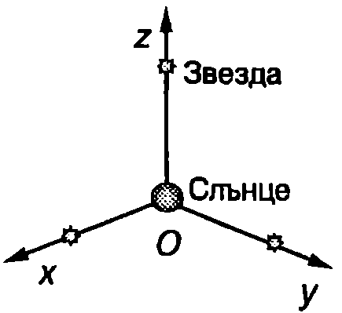
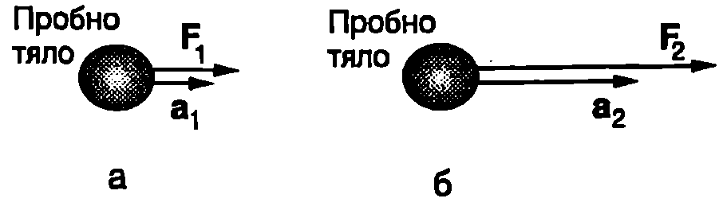
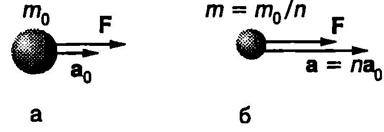
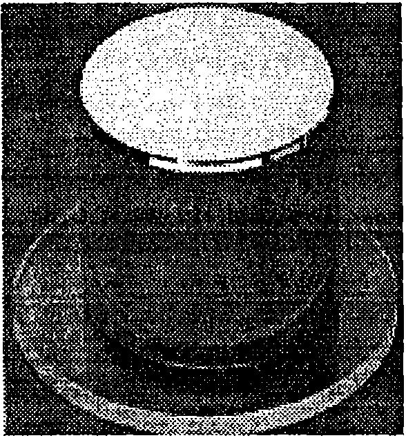
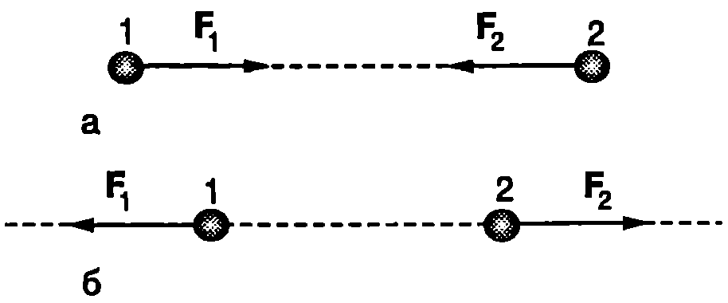
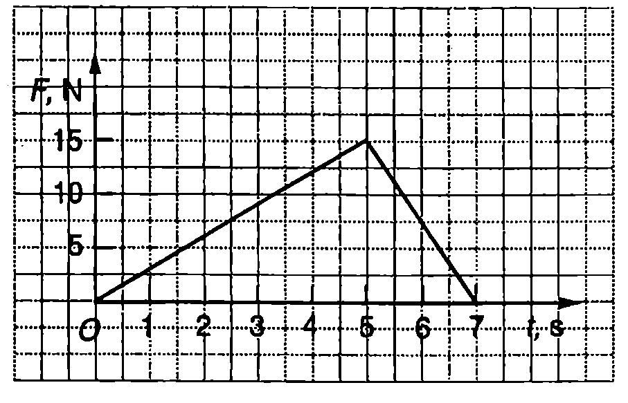

Закон за инерцията
Ако хлъзнем по килим хокейна шайба, скоростта й бързо намалява и, след като измине известно разстояние, тя спира. При същата начална скорост шайбата изминава по-голямо разстояние върху гладка маса, а върху лед скоростта й ще намалява още по-бавно. Причина за изменението на скоростта на шайбата са силите на триене и съпротивление. Когато те намаляват, скоростта се изменя по-бавно. Какво би станало, ако не действат никакви сили? Отговор на този фундаментален за физиката въпрос дава законът за инерцията (първи принцип на механиката):
Всяко тяло запазва състоянието си на покой или на праволинейно равномерно движение, докато външно въздействие не го изведе от това състояние.
Ние не бихме могли да поставим шайбата, нито кое да е друго тяло, в такива идеални условия, когато то не взаимодейства с никакви други тела. След като не е възможно едно тяло напълно да се изолира от въздействието на другите тела, какво ни дава основание да разглеждаме горното твърдение като основен физичен закон? Нали той не може непосредствено да бъде проверен? Отговор дава практиката - този закон косвено се потвърждава от всички извършени досега наблюдения. Във всички случаи дори на най-незначителни отклонения от праволинейното равномерно движение е установено наличие на сили, които обясняват тези отклонения.
Праволинейното равномерно движение в също толкова “естествено” състояние на телата, както покоят, затова не е необходимо никакво въздействие, за да се поддържат тези две състояния. Този фундаментален факт, формулиран най-напред от Галилей като закон за инерцията, а по-късно приет от Нютон за първи принцип на механиката, бележи началото на формирането на физиката като наука в съвременния смисъл на това понятие.
Тяло, което не взаимодейства с други тела, се нарича свободно тяло. Праволинейното и равномерно движение на свободно тяло се нарича движение по инерция. Движението по инерция е проява на динамичното свойство на телата, наречено инертност.
Както е известно, всяко движение е относително. Дали във всички отправни системи е в сила законът за инерцията? Например при рязко спиране на влака (закъснително движение с голямо ускорение) незакрепените предмети, които са били първоначално в покой, започват да се движат спрямо влака, без да са подложени на външно въздействие. Следователно в отправната система, свързана с движещия се с ускорение влак, законът за инерцията не е в сила.
Отправни системи, спрямо които е в сила законът за инерцията, се наричат инерциални отправни системи. В закона за инерцията се съдържат две твърдения: 1. На всички тела е присъщо свойството инертност, т.е. свойството да поддържат състоянието си на покой или на праволинейно равномерно движение.
- Съществува поне една инерциална отправна система.
Да допуснем, че дадена отправна система K е инерциална. Тогава всички други отправни системи, които се движат праволинейно и равномерно спрямо К, също са инерциални. Отправни системи, които се движат с ускорение спрямо К, са неинерциални в тях не е в сила законът за инерцията.
Както знаем, Земята се върти около оста си и всички точки от нейната повърхност описват окръжности. Движението по окръжност, подобно на всяко друго криволинейно движение, се извършва с ускорение. Например ускорението на точките около екватора е приблизително . Следователно отправната система, свързана със земната повърхност, не е инерциална. Тъй като нейното ускорение обаче е много по-малко от ускорението на телата, чието движение изучаваме (например ускорението на падащите тела е около ), в повечето случаи можем да пренебрегнем денонощното въртене на Земята. Няма да отчитаме и въртенето на Земята около Слънцето, което се извършва с още по-малко ускорение (около ). Ще смятаме, че отправната система, свързана със земната повърхност, е инерциална.
Самата Слънчева система, както и другите звезди, се въртят около центъра на Галактиката, но ускоренията при това криволинейно движение са много по-малки (ускорението на Слънчевата система е около ). Затова отправна система, чието начало е в центъра на Слънцето, а координатните оси преминават през три отдалечени звезди (Фиг. \ref{fig:4.1}) с много по-голяма точност може да се смята за инерциална, отколкото отправната система, свързана със земната повърхност. Нарича се отправна система, свързана с неподвижните звезди”.

Инерциална отправна система, свързана с неподвижните звезди".
`Фиг. 4.1`
Сила
Като количествена мярка за взаимодействието на телата в механиката се използва физичната величина сила. Силата е векторна величина характеризира се с големина, посока и приложна точка. В тази глава ще разглеждаме динамиката на материална точка или на твърди тела, които се движат само постъпателно. Когато едно тяло не се върти (или деформира), не е съществено в коя негова точка е приложена силата. Затова ще смятаме, че всички сили са приложени в центъра на тялото.
Големините на различните сили могат да се сравняват по ускоренията, които те създават на дадено тяло, наречено пробно тяло. Нека например силата , приложена към пробното тяло, създава ускорение , (Фиг. \ref{fig:4.2}а). Ако под действие на друга сила пробното тяло се движи с пъти по-голямо ускорение (), тогава силата е пъти по-голяма от силата (Фиг. \ref{fig:4.2}б). Посоката на силата съвпада с посоката на ускорението, което тя създава.

Силите могат да се сравняват по ускоренията, които създават на пробното тяло,
`Фиг. 4.2`
Опитът показва, че когато върху едно тяло едновременно са приложени няколко ( на брой) сили , , , \dots, , тяхното механично действие е еквивалентно на действието на една единствена сила , която е равна на геометричната (векторна) сума от всички сили
Силата се нарича резултантна или равнодействаща на всички приложени към тялото сили.
Maca
Телата притежават свойството инертност, т.е. те се стремят да запазят състоянието си на покой или на праволинейно равномерно движение и се противопоставят на всеки опит да се приведат в движение или да се измени тяхната скорост (по големина или по посока). Количествена мярка за инертността на телата е физичната величина маса. Масите на различни тела могат да се сравнят по ускоренията, които те получават под действие на една и съща сила. Да означим с масата на пробното тяло, която бихме могли да приемем за единица мярка за маса. Под действие на сила пробното тяло получава ускорение . Да приложим същата сила върху друго тяло, чиято маса искаме да сравним с масата на пробното тяло. Колкото по-голямо е ускорението а на тялото, толкова по-малка е неговата маса. Например, ако (Фиг. \ref{fig:4.3}), то .
Опитът показва, че масата е адитивна величина - масата на едно тяло е сума от масите на отделните негови части. Масата е положителна скаларна величина, която се измерва в килограми. По определение \eqref{eq:4.3} един килограм (1 kg) е маса, равна на масата на международния прототип на килограма (Фиг. \ref{fig:4.4}).

Масите на телата могат да се сравнят по ускоренията, които телата получават под действие на една и съща сила.
`Фиг. 4.3`

Международният прототип на килограма цилиндър с еднакви диаметър и височина (39 mm), в направен от изключително стабилната сплав платина-иридий (90\% Pt и 10\% Ir). Приет е през 1887 година и се съхранява в Международното бюро за мерки и теглилки в Севър (близо до Париж, Франция).
`Фиг. 4.4`
Втори принцип на механиката
Многобройните наблюдения и опити показват, че ускорението на телата зависи както от тяхната маса, така и от действащите им сили. Резултатите от опита се обобщават от втория принцип на механиката:
Ускорението на едно тяло е правопропорционално на резултантната сила, която му действа, и е обратнопропорционално на неговата маса:
Единицата за сила се нарича нютон (N). Съгласно с уравнение \eqref{eq:4.2} 1 е сила, която приложена към тяло с маса 1 kg му придава ускорение :
Като отчетем, че ускорението е първа производна на скоростта и втора производна на радиус-вектора по времето , уравнение \eqref{eq:4.2} може да се запише във вида
В някои случаи масата се изменя по време на движението. Например при реактивно движение става изхвърляне на изгорелите газове и масата на ракетата непрекъснато намалява. Засега ще се ограничим с разглеждане движението само на тела с постоянна маса, а на реактивното движение ще се спрем в \ref{sec:10}. Когато , уравнение \eqref{eq:4.3} се записва във вида
Векторът , равен на произведението от масата и скоростта на тялото (материалната точка)
се нарича импулс на тялото. Импулсът е една от най-важните динамични характеристики на телата. Уравнение \eqref{eq:4.4} изразява втория принцип на механиката в друга формулировка (дадена от самия Нютон): Скоростта, с която се изменя импулсът на едно тяло (първата производна на импулса по времето), е равна на резултантната сила, действаща на тялото.
Ще отбележим, че при движението на тяло с постоянна маса уравнения \eqref{eq:4.3} и \eqref{eq:4.4} са еквивалентни. Формулировката на втория принцип на механиката, изразена с уравнение \eqref{eq:4.4}, обаче е по-обща. Тя описва също така движението на тела с променлива маса, както и релативистките движения, извършващи се със скорости, близки до скоростта на светлината.
Уравнение \eqref{eq:4.4} се записва и във вида
Величината се нарича импулс на силата за безкрайно малкия интервал от време dt. Съгласно с уравнение \eqref{eq:4.6} изменението на импулса на едно тяло за интервал от време е равно на импулса на действащата сила за същия интервал от време.
Вторият принцип на механиката е в сила само за инерциални отправни системи. От уравнения \eqref{eq:4.2} и \eqref{eq:4.3} в частност следва, че при ускорението е нула, а скоростта - постоянна ( и ), т.е. тяло, на което не действа сила, се движи праволинейно и равномерно. Можем ли да направим извода, че вторият принцип на механиката включва в себе си като частен случай закона за инерцията (първия принцип на механиката)? Такъв извод е неправилен, защото законът за инерцията постулира като обобщение от опита, че съществуват инерциални отправни системи и движение по инерция. Ако не беше възможно движението по инерция и не съществуваха инерциални отправни системи, вторият принцип на механиката нямаше да е в сила.
Пример 4.1
Известно е, че когато скачаме от високо, трябва да приклекнем при приземяването. Направете количествена оценка на средната сила и средното ускорение в момента на приземяване след скок от височина върху бетонна писта. Разгледайте два случая:
а) приземяване с опънати крака. Приемете, че подметките на обувките и меката тъкан на петите се свиват общо с ;
б) приземяване с приклякане от . Масата на човека приемете за . \end{psexample}
Решение
Ще използваме резултата от Пример~\ref{ex:1.4} на стр.14, за да определим скоростта, с която тялото достига земната повърхност
а) Спирачният път е . Приемаме движението за равнозакъснително с начална скорост и определяме ускорението
Ускорението , което е около 280 пъти по-голямо от земното ускорение , се създава от силата , с която настилката действа върху човека (пренебрегваме силата на тежестта). Големината на силата определяме от уравнението на втория принцип на механиката:
Това е много голяма сила, която води до счупвания и други тежки травми.
б) В този случай:
, и .
Тази сила при удара се поема от мускулите и сухожилията. За физически здрав и трениран човек тя не е опасна.
Трети принцип на механиката
Механичното действие на две тела едно върху друго винаги има характер на взаимодействие. Според третия принцип на механиката, който е обобщение на опита:
силите на взаимодействие между две материални точки са равни по големина, противоположни по посока и действат в направление на правата, съединяваща двете точки.
където е силата, с която материалната точка 2 действа на материалната точка 1, а е силата, с която 1 действа на 2. На Фиг. \ref{fig:4.5}а е показан случаят, когато двете материални точки взаимно се привличат, а на Фиг. \ref{fig:4.5}б - отблъскват.

Силите на взаимодействие между две тела (материални точки) са равни по големина и противоположни по посока.
`Фиг. 4.5`
Третият принцип на механиката може да се формулира и по следния начин: всяко действие поражда равно по големина и противоположно по посока противодействие. Например материалната точка 1 от Фиг. \ref{fig:4.5} действа на материалната точка 2 със сила , а тя и противодейства с равна по големина и противоположна по посока сила . Ще отбележим, че силите на действие и противодействие са приложени към различни тела, поради което не се уравновесяват.
Коя от двете сили на взаимодействие ще наречем сила на действие и коя на противодействие, не е съществено. Важното е, че те винаги възникват и действат едновременно (не е възможно действие без противодействие). Силите на действие и противодействие винаги имат една и съща природа. Например при удар между две билярдни топки възникват еластични сили на отблъскване. Два постоянни магнита взаимодействат с магнитни сили, два точкови заряда - с електрични сили, а парашутистът и Земята взаимно се привличат с гравитационни сили. Не е възможно силата на действие да е например електрична, а на противодействие гравитационна.
Пример 4.2
Към вертикална стена е насочена хоризонтална струя вода, която след удара в стената се стича надолу. Определете силата, с която водата действа на стената. Струята изтича от тръба с радиус с дебит . Плътността на водата е . \end{psexample}
Решение
За време от върху стената попада вода с маса . Дебитът е равен на обема вода, изтекъл от напречното сечение на тръбата за 1 s, т.е , откъдето определяме скоростта на водата: . При удара в стената скоростта на водата намалява от и до нула. Съгласно с втория принцип на механиката импулсът на силата , с която стената действа на водата, е равен на изменението на импулса на водата:
, откъдето
Според третия принцип на механиката водата действа на стената със същата по големина сила (115 N), която е насочена в противоположна посока (към стената).
Задачи
-
Пътник, който седял на последната седалка на автобус, иска да съди водача. Според пътника, водачът рязко е натиснал спирачките, при което куфар от предната част на автобуса полетял назад и го наранил. Ако вие сте съдия, ще приемете ли обвинението на пътника? Обяснете.
-
Барон Мюнхаузен твърди, че сам се изтеглил за косите от блатото. Не послъгва ли баронът? Обяснете.
-
Две топки с различни маси се удрят. Коя топка се движи с по-голямо ускорение по време на удара? Обяснете.
-
Тяло с маса 1 kg се движи под действие на две взаимно перпендикулярни сили с големини съответно 20 N и 21 N. Колко в ускорението на тялото?
-
Тяло с маса 0,5 kg се движи под действие на две равни по големина сили, които сключват помежду си ъгъл . Определете големината на силите, ако ускорението на тялото е 2 m/s,
-
Топка за тенис с маса g, която лети със скорост m/s перпендикулярно срещу стена, се удря в стената и отскача в обратна посока със същата по големина скорост. Определете средната сила, с която стената действа на топката, ако продължителността на удара е .
-
Частица с маса g се движи в равнината . В даден момент скоростта на частицата e , където , . 3а интервал от време на частицата действа постоянна сила , след което скоростта й става . Определете големината и посоката на силата .
-
Тяло с маса kg, което първоначално е в покой, започва да се движи под действие на постоянна по посока сила , чиято големина се изменя, както е показано на графиката от Фиг. \ref{fig:4.6}. Определете импулса на силата и крайната скорост на тялото.
-
Тяло с маса kg, което първоначално е в покой, започва да се движи под действие на постоянна по посока сила, чиято големина се изменя с течение на времето по закона , където , .
а) Постройте графика на функцията .
б) Пресметнете скоростта на тялото в момент t = 3 s.

`Фиг. 4.6`